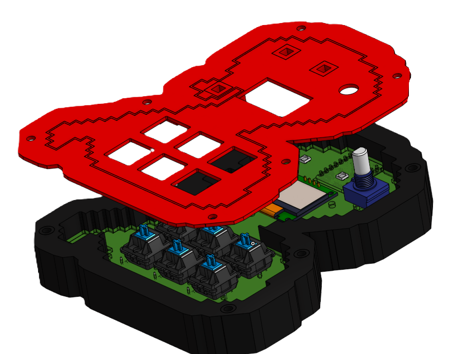
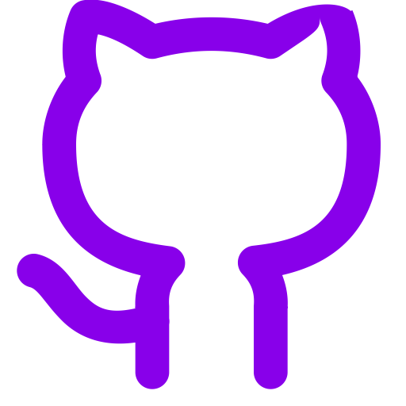
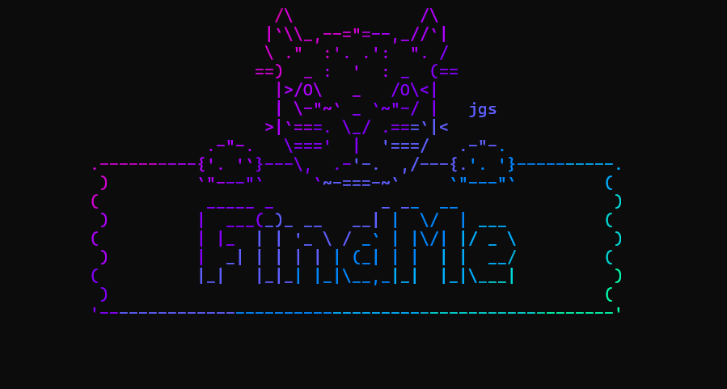
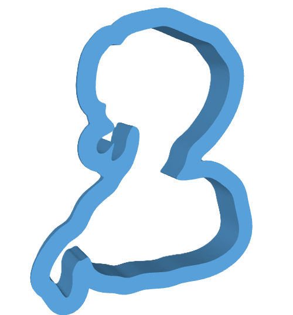
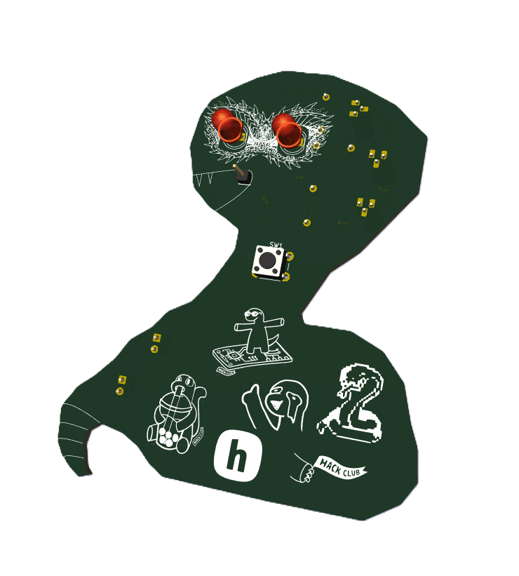

SnakePad

A macropad in a snake shape with a 6 keys and a rotary encoder and a screen. (The best project for me yet. 😍😍)

FindMe

A terminal tool to find lost files with a dynamic TUI that can work on any platform using the find command on this platform.
Cookie Snake

A Cookie cutter in a snake shape for BakeBuild. (I have learned using onshape for this YSWS 🤩.)
SnakePad

A PCB which detect the electricity flowing in a wire using a coil. (The first PCB I made. I love it so much.)